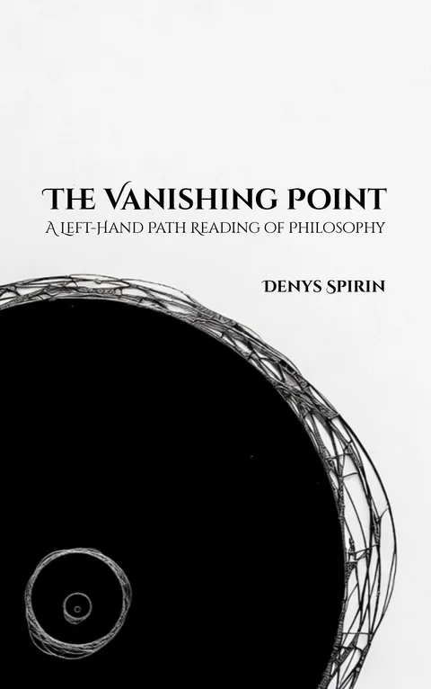

Volume IV
The Vanishing Point: A Left-Hand Path Reading of Philosophy
Reads the history of philosophy as a single operation: ontologization. The subject's act of distinction is converted into an independent feature of reality. Across six levels of recursive distinction, every major system delegates the subject's work to an external construct. The apparent progress of philosophy is the relocation of the same error. The book dismantles the mechanism and traces what remains: transparency, the meta-position reclaimed, the Black Flame — the subject as the ungrounded source of its own distinguishing.
Contents
- Chapter 1Plato creates the basic wound of Western philosophy: the world is split into visible things and invisible forms. The chapter shows that the One depends on distinction and on the subject it tries to erase.
- Chapter 2The chapter builds the core mechanism of the book: distinction. Subject, object, space, time, language, mathematics, and law arise from repeated acts of drawing boundaries.
- Chapter 3Unity, universals, and common properties are treated as codes produced by the subject. The chapter shows that every boundary can be redrawn at another scale.
- Chapter 4Ontologization is defined as the moment when a product of distinction is treated as reality itself. Transparency appears as the opposite posture: using codes without worshipping them.
- Chapter 5Early philosophy is read through the first rung: matter, qualities, atoms, spirit, perception, and habit. The ground keeps moving from one substrate to another.
- Chapter 6The second rung is the domain of concepts: forms, universals, essences, categories, and logoi. Plato, Aristotle, Plotinus, Maximus, scholastics, and nominalists all reinstall concepts as reality.
- Chapter 7Kant, Fichte, Schelling, Hegel, Husserl, and Frege are read as attempts to relocate the ideal domain into the subject, history, method, or logic.
- Chapter 8Feuerbach, Marx, Stirner, Kierkegaard, Nietzsche, and Deleuze attack inherited abstractions, then often create new ones in their place.
- Chapter 9The history of philosophy is mapped as movement across six rungs of ontologization. Different civilizations climb the ladder differently: from matter upward, or from the Absolute downward.
- Chapter 10Language becomes the third rung. Wittgenstein, Heidegger, structuralism, Derrida, Foucault, and analytic philosophy turn language into the medium through which reality is fixed.
- Chapter 11Mathematics becomes the fourth rung. Pythagorean number, Platonic geometry, formalism, logicism, structuralism, and intuitionism are read as different ways of giving mathematical codes ontological weight.
- Chapter 12The laws of nature become the fifth rung. Scientific realism, Humeanism, necessitarianism, and structural realism all ask whether laws govern reality or only summarize stable patterns.
- Chapter 13The sixth rung is the projection of the subject’s meta-position: Brahman, Dao, Being, the One, and the Absolute are read as outward projections of the subject’s own inexhaustible center.
- Chapter 14Apophatic theology, Cusanus, Eckhart, Hegel, Tillich, Whitehead, Heidegger, and process thought preserve the sixth rung by making the Absolute harder to attack.
- Chapter 15Secular thought repeats the same projection through will, unconscious drives, neuroscience, relation, community, and artificial intelligence. Delegation survives after God.
- Chapter 16Religious systems turn sixth-rung projection into full architecture: Hindu dharma, Buddhism, Daoism, Christianity, Islam, Sufism, New Age spirituality, and moral self-evidence.
- Chapter 17The great deflationary traditions are examined: Jaspers, Nāgārjuna, Pyrrhonism, pragmatism, Spencer-Brown, constructivism, Pascal, and Kierkegaard. Each reaches groundlessness and then furnishes it again.
- Chapter 18The Left-Hand Path answer is transparency and self-deification. The subject retrieves its projections, treats every code as an instrument, and stands as the Black Flame among other wills.
- Chapter 19The book turns its own method against itself. The six-rung ladder is also a distinction, a tool rather than a final ontology; the result is zero-ontology.
- Chapter 20Philosophy reaches its limit. Distinction can clear the ground, but direct experience, invocation, deity-contact, and knowledge-with belong to practice, where the philosopher’s instrument ends.